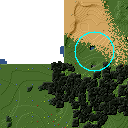
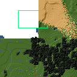

Minetest Mapper Manual
A tool to generate maps of minetest and freeminer worlds.
Invocation
Basic Usage
After installation, minetestmapper is started as follows:
('\' is a continuation character - the command-line continues on the next line. Type return only after the line that does not end with the continuation character)
minetestmapper \
--input <world-directory> \
--output <image-file-name.png>
If the world is not too large, and if minetestmapper is installed in a system directory, it will most likely work as expected.
Possibly, minetestmapper will not be able to find a colors.txt file. If that happens, the colors.txt file can be specified on the command-line:
minetestmapper \
--input <world-directory> \
--output <image-file-name.png> \
--colors <filename>
Or the colors.txt file must be installed in a location where minetestmapper will find it. A colors.txt file (named colors.txt, in lowercase) in the world's directory will certainly be found. Depending on the system and the configuration, other locations are available. Use the following command to find out which:
minetestmapper \
--input <world-directory> \
--output <image-file-name.png> \
--verbose-search-colors=2
From the basis above, add any number of other options that are documented below, according to to personal needs and taste.
Command-line Options Summary
For a more detailed description of the options, see Detailed Description of Options below.
Basic options:
- --help : Print an option summary
- --version : Print version ID of minetestmapper
- --input <world-dir> : Specify the world directory (mandatory)
- --output <image filename> : Specify the map file name (mandatory)
- --colors <filename> : Specify the colors file name.
- --heightmap[=color]> : Generate a height map instead of a regular map
- --heightmap-nodes <filename> : Specify the nodes list for the height map
- --heightmap-colors <filename> : Specify the color definition file for the height map
- --geometry <geometry> : Specify the desired map dimensions
- --scalefactor <factor> : Specify the scaling factor for the map
- --progress : Print progress information while generating the map
- --verbose[=2] : Report statistics about the world and the generated map
Area options:
- --scalefactor <factor> : Specify the scaling factor for the map
- --geometry <geometry> : Specify the desired map dimensions
- --cornergeometry <geometry> : Suggest interpretation as a corner + dimensions
- --centergeometry <geometry> : Suggest interpretation as center + dimensions
- --min-y <y> : Specify the minumum depth of nodes to be included
- --max-y <y> : Specify the maximum height of nodes to be included
- --geometrymode pixel,block,fixed,shrink : Specify granularity and whether to shrink the map if possible
Colors for specific areas or parts of the map:
- --bgcolor <color> : Specify the background color for the image
- --blockcolor <color> : Specify the color for empty mapblocks
- --scalecolor <color> : Specify the color for text in the scales on the side
- --origincolor <color> : Specify the color for drawing the map origin (0,0)
- --playercolor <color> : Specify the color for drawing player locations
- --tilebordercolor <color> : Specify the color for drawing tile borders
Map features:
- --drawscale[=top,left] : Draw a scale on the left and/or top edge
- --drawheightscale : Draw a height scale at the bottom of the map
- --sidescale-interval <major>[[,:]<minor>] : Use custom major and minor intervals in the scale.
- --heightscale-interval <major>[[,:]<minor>] : Use custom major and minor intervals in the height scale.
- --draworigin : Draw a circle at the origin (0,0) on the map
- --drawplayers : Draw circles at player positions on the map
- --drawalpha[=cumulative|cumulative-darken|average|none] : Enable drawing transparency for some nodes (e.g. water)
- --drawair : Draw air nodes (read the warnings first!)
- --noshading : Disable shading that accentuates height diffences
Tiles:
- --tiles <tilesize>[+<border>]|block|chunk : Draw a grid of the specified size on the map
- --tileorigin <x>,<y>|world|map : Specify the coordinates of one tile's origin (lower-left corner)
- --tilecenter <x>,<y>|world|map : Specify the coordinates of one tile's center
- --tilebordercolor <color> : Specify the color for drawing tile borders
- --chunksize <size> : Specify or override the chunk size (usually 5 blocks)
Drawing figures on the map
Using world coordinates:
- --drawpoint "<x>,<y> color" : Draw a point (single pixel) on the map
- --drawline "<geometry> color" : Draw a line on the map
- --drawcircle "<geometry> color" : Draw a circle on the map
- --drawellipse "<geometry> color" : Draw an ellipse on the map
- --drawrectangle "<geometry> color" : Draw a rectangle on the map
- --drawtext "<x>,<y> color text" : Write some text on the map
Same figures using map/image coordinates (0,0 is the top-left corner of the map)
- --drawmappoint "<x>,<y> color" : Draw a point (single pixel) on the map
- --drawmapline "<geometry> color" : Draw a line on the map
- --drawmapcircle "<geometry> color" : Draw a circle on the map
- --drawmapellipse "<geometry> color" : Draw an ellipse on the map
- --drawmaprectangle "<geometry> color" : Draw a rectangle on the map
- --drawmaptext "<x>,<y> color text" : Write some text on the map
Feedback / information options:
- --help : Print an option summary
- --version : Print version ID of minetestmapper
- --verbose[=n] : Report world and map statistics (size, dimensions, number of blocks)
- --verbose-search-colors[=n] : Report which colors files are used and/or which locations are searched
- --progress : Show a progress indicator while generating the map
Miscellaneous options
- --backend <auto/sqlite3/leveldb/redis> : Specify or override the database backend to use
- --sqlite-cacheworldrow : Modify how minetestmapper accesses the sqlite3 database. For performance.
Detailed Description of Options
A number of options have shorthand equivalent options. For instance --help and -h are synonyms. The following are notable:
- -h = --help
- -V = --version
- -o = --output
- -i = --input
For the others, please consult the source code. Note that support for other short options than mentioned above might be removed in the future.
Available options:
- --backend <auto|sqlite3|leveldb|redis>
- --bgcolor <color>
- --blockcolor <color>
- --centergeometry <geometry>
- --chunksize <size>
- --colors <file>
- --cornergeometry <geometry>
- --draw[map]<figure> "<geometry> color"
- --draw[map]circle "<geometry> color"
- --draw[map]ellipse "<geometry> color"
- --draw[map]line "<geometry> color"
- --draw[map]point "<x>,<y> color"
- --draw[map]rectangle "<geometry> color"
- --draw[map]text "<x>,<y> color text"
- --drawair
- --drawalpha[=cumulative|cumulative-darken|average|none]
- --drawheightscale
- --draworigin
- --drawplayers
- --drawscale[=left,top]
- --geometry <geometry>
- --geometrymode pixel,block,fixed,shrink
- --heightmap-colors[=<file>]
- --heightmap-nodes <file>
- --heightmap-yscale <factor>
- --heightmap[=<color>]
- --heightscale-interval <major>[[,:]<minor>]
- --height-level-0 <level>
- --help
- --input <world_path>
- --max-y <y>
- --min-y <y>
- --noshading
- --origincolor <color>
- --output <output_image.png>
- --playercolor <color>
- --progress
- --scalecolor <color>
- --scalefactor 1:<n>
- --sidescale-interval <major>[[,:]<minor>]
- --sqlite-cacheworldrow
- --tilebordercolor <color>
- --tilecenter <x>,<y>|world|map
- --tileorigin <x>,<y>|world|map
- --tiles <tilesize>[+<border>]|block|chunk
- --verbose-search-colors[=n]
- --verbose[=n]
- --version
--backend <auto|sqlite3|leveldb|redis>
Set or override the database backend to use.
By default (auto), the database is obtained from the world configuration, and there is no need to set it,
--bgcolor <color>
Specify the background color for the image. See Color Syntax below.
Two maps with different background:
--blockcolor <color>
Specify the color for empty mapblocks. See Color Syntax below.
An empty mapblock exists in the database, and contains only air or ignore nodes. It is normally not visible, even if no other mapblocks exist above or below it. This color makes such blocks visible if no nodes other than air or ignore are above or below it.
To see the difference between empty blocks and absent blocks, generate a map that is larger than the world size by at least 2 map blocks.
Two maps, the second with blockcolor enabled:

--centergeometry <geometry>
Suggest interpreting a geometry as center coordinates and dimensions. If possible.
See also --geometry
--chunksize <size>
Set or override the chunk size.
The chunk size is the unit of map generation minetest. Minetest never generates a single block at a time, it always generates a chunk at a time.
The chunk size may be used by the --tiles option. It is obtained from the world by default. It is usually but not necessarily 5 (i.e. 5x5x5 blocks).
--colors <file>
Specify the name of the 'colors.txt' to use.
See Colors and Nodes Files and Colors.txt Syntax.
Minetestmapper will attempt to automatically find a suitable colors.txt file. See Colors Files Search Locations.
--cornergeometry <geometry>
Suggest interpreting a geometry as corner coordinates and dimensions. If possible.
See also --geometry
--draw[map]<figure> "<geometry> color"
Draw a figure on the map, with the given geometry and color.Possible figures are:
- circle
- ellipse (which is synonymous for circle)
- line
- point (which uses simple coordinates (x,y) instead of a geometry)
- rectangle
- text (which uses simple coordinates (x,y) instead of a geometry)
If --draw<figure> is used, the geometry specifies world coordinates; If --drawmap<figure> is used, the geometry specifies map (image) coordinates, where 0,0 is the top-left corner of the map-part of the image, and coordinates increase to the right and down. Any points on the left and top scale have negative coordinates.
Note that the combination of geometry and color should be a single argument. This means that the pair must be enclosed in quotes together on the command-line, else they will be misinterpreted as two command-line arguments.
Example:
minetestmapper --drawcircle "10,10:6x6 red"For the color of figures, an alpha value can be specified. Note that due to a bug in the drawing library, this has not the expected effect when drawing circles and ellipses.
See also Geometry Syntax and Color Syntax.
Interaction of figure geometry and map scaling
If the map is scaled, figures could either keep the same size in pixels, or the same size relative to the world, which would make them appear smaller, like the entire map.
Figures which are drawn using map (image) coordinates are never scaled. It is assumed that it was the intention to draw them on the image to begin with, and not in the world.
At the moment, figures which are drawn using world coordinates may or may not scale with the world.
If the geometry of a figure is specified using 2 corners, then these coordinates obviously scale with the world, and the resulting figure will be visually smaller as well.
If the geometry of a figure is specified using a corner or the center and dimensions, then the corner or center is obviously also interpreted as world-coordinates, but the dimensions will be interpreted relative to the image.
In practise this means that two identically-sized figures in a full-scale map, may have different sizes after scaling, depending on how their geometry was specified. The jury is still out as to whether this is a bug or a feature.
--draw[map]circle "<geometry> color"
Draw a circle on the map, with the given geometry and color.
See --draw[map]<figure> for details.
An example circle:

--draw[map]ellipse "<geometry> color"
Draw an ellipse on the map. This is a synonym for --draw[map]circle.
See --draw[map]<figure> for details.
--draw[map]line "<geometry> color"
Draw a line on the map, with the given geometry and color.
See --draw[map]<figure> for details.
An example line:
--draw[map]point "<x>,<y> color"
Draw a point on the map, at the given location, using the given color.
See --draw[map]<figure> for details.
An example point (red, in te white area):

--draw[map]rectangle "<geometry> color"
Draw a reactangle on the map, with the given geometry and color.
See --draw[map]<figure> for details.
An example rectangle:

--draw[map]text "<x>,<y> color text"
Write text on the map, at the specified location, using the given color.
The text can consist of
Note that the combination of geometry, color and text should be a single argument. This means that they must be enclosed in quotes together on the command-line, else they will be misinterpreted as three command-line arguments.
Example:
minetestmapper --drawtext "20,-10 red This text will be on the map"See also --draw[map]<figure> for more details.
Example text:

--drawair
Draw air nodes, as if they were regular nodes.
The color of air will be obtained from the colors file.
- WARNING 1:
the color of air nodes should most probably have an alpha value of 0, so that it is fully transparent. The effect will be, that air nodes are only visible if nothing else is below them.
Setting alpha to anything other than 0, will most probably cause all non-air nodes to be obscured by all of the air that is above them.
- WARNING 2:
- Drawing air nodes instead of ignoring them will have a significant performance impact (unless they happen to be defined as opaque). Use this with consideration.
Two images, one with air, the other without. Look inside the rectangle:

--drawalpha[=cumulative|cumulative-darken|average|none]
Specify how to render the alpha (transparency) value of nodes.
- none: don't render transparency. This is the same as omitting this option.
- average: average the entire stack of transparent nodes before combining the resulting color with the color of the first opaque node below the stack. Water will remain transparent indefinitely.
- cumulative: make lower nodes progressively more opaque. The effect is for instance, that water becomes opaque below a certain depth - only height differences will 'shine' through, if shading is not disabled (--noshading)
- cumulative-darken: Same as cumulative, except that after the color has become opaque, it is progressively darkened to visually simulate greater depth. This is looks great for deeper waters that are not too deep. The downside is that very deep water will eventually become black when using this option.
If this option is used without a method argument, the default is 'average'.
For backward compatibility, 'nodarken' is still recognised as alias for 'cumulative'; 'darken' is still recognised as alias for 'cumulative-darken'. They are otherwise undocumented. Please don't use them, they may disappear in the future.
Note that each of the different modes has a different color definition for transparent blocks that looks best. For instance, for water, the following are suggested:
(disabled): 39 66 106 [192 224 - optional: alpha configuration will be ignored]
cumulative: 78 132 255 64 224
cumulative-darken: 78 132 255 64 224 (same as cumulative)
average: 49 82 132 192 224 (look also good with alpha disabled)
Custom colors files are provided for these alternatives: colors-average-alpha.txt and colors-cumulative-alpha.txt. If desired, these must be manually selected.
The following images show average alpha mode, cumulative mode and cumulative-darken mode. In each case, the matching custom color file was selected:
--drawheightscale
If drawing a height map (--heightmap), draw a height scale below the image.
A height map with scale:
--draworigin
Draw a circle at the world origin (coordinates 0,0)
The color can be set with --origincolor.
An image with world origin drawn:
--drawplayers
Draw circles at the positions of players
The color can be set with --origincolor.
An image with a few players:
--drawscale[=left,top]
Draw scales at the left and.or top of the map.
If neither 'left' nor 'top' is specified, draw them on both sides.
The color of the lines and numbers can be set with --scalecolor.
The major and minor interval can be configured using --sidescale-interval.
Images of scales on the top, left and on both sides
--geometry <geometry>
Specify the map geometry (i.e. which part of the world to draw).
See Geometry Syntax for how the geometry can be specified.
By default, the entire visible world is drawn.
--geometrymode pixel,block,fixed,shrink
Specify explicitly how the geometry should be interpreted.
One or more of the flags may be used, separated by commas or spaces. In case of conflicts, the last flag takes precedence.
See also Geometry Syntax
The geometry can have pixel or block granularity:
pixel: interpret the coordinates with pixel granularity.
A map of exactly the requested size is generated (after adjustments due to the 'shrink' flag, or possible adjustments required by the scale factor).
block: round the coodinates to a multiple of 16.
The requested geometry will be extended so that the map does not contain partial map blocks (of 16x16 nodes each). At least all pixels covered by the geometry will be in the map, but there may be up to 15 more in every direction.
The geometry can be fixed as requested, or the map can be shrunk:
shrink: Generate a map of at most the requested geometry. Shrink it to the smallest possible size that still includes the same information.
Currently, shrinking is done with block granularity, and based on which blocks are in the database. As the database always contains a row or and column of empty, or partially empty blocks at the map edges, there will still be empty pixels at the edges of the map. Use --blockcolor to visualize these empty blocks.
fixed: don't reduce the map size. What ever is specified using a geometry option, is what will be draw, even if partly or fully empty.
NOTE: If this flag is used, and no actual geometry is specified, this would result in a maximum-size map (65536 x 65536), which is currently not possible, and will fail, due to a bug in the drawing library.
The default is normally 'pixel' and 'fixed', if a geometry option was specified. See Legacy Geometry Format for one exception.
Default image in the center, block mode enabled to the left and shrink mode enabled to the right:
--heightmap-colors[=<file>]
Use the specified file as the heightmap colors file.
See Colors and Nodes Files and Heightmap-colors.txt Syntax.
Minetestmapper will attempt to automatically find a suitable heightmap-colors.txt file. See Colors Files Search Locations.
--heightmap-nodes <file>
Use the specified file as the heightmap nodes file.
See Colors and Nodes Files and Heightmap-nodes.txt Syntax.
Minetestmapper will attempt to automatically find a suitable heightmap-nodes.txt file. See Colors Files Search Locations.
--heightmap-yscale <factor>
Scale the heights of the map before computing the height map colors.
This is useful when there are very large, or only very small, height differences in the world, and too much of the map is drawn in a single, or similar, colors.
Using this option improves the spread of colors in the height map. The option --height-level-0 may also be of use.
'Factor' is a decimal number. A value of 1 means no change; a larger value stretches the color range, a smaller value (but larger than 0) condenses the color range.
Note that the water level will probably not be rendered correctly for scale factors smaller than 1, nor for small non-integer scale factors. A suitable choice of --height-level-0 may lessen this effect somewhat.
For the same effect, a modified colors file could be used. --heightmap-yscale is easier and quicker.
Two images with a different y scale:
--heightmap[=<color>]
Generate a height map instead of a regular map.
If a color is given, a monochrome map is generated in shades of that color, ranging from black at depth -128 to the given color at height 127.
See also Color Syntax.
Three colors are treated specially:
- white: The entire map will be white. Any visible structure will result of the rendering of height differences.
- black: The entire map will be black. Any visible structure will result of the rendering of height differences. This actually looks pretty good
- grey: The map will be drawn in shades of grey, ranging from black at level -128 to white at level 127
If no color is specified, minetestmapper will use a colors file to determine which colors to use at which height level. See Colors and Nodes Files and Heightmap-colors.txt Syntax.
In any case, minetestmapper also needs a nodes file. See Heightmap-nodes.txt Syntax for details.
A regular map, a greyscale height map and a colored height map:

--heightscale-interval <major>[[,:]<minor>]
When drawing a height scale at the bottom of the map, use the specified subdivisions.
'major' specifies the interval for major marks, which are accompanied by a number indicating the height.
When specified as 'major,minor', 'minor' specifies the interval for minor tick marks
When specified as 'major:minor', 'minor' specifies the number of subdivisions of the major interval. In that case, major should be divisible by minor. E.g.: 10:2 is OK (equivalent to 10,5), 10:3 is not.
By default, the major interval is calculated based on the available space and the range of heights in the map. The default minor interval is 0 (i.e. no minor ticks)
A custom height scale interval:
--height-level-0 <level>
Specify the zero height level of the map to use for height maps.
This is the world height that will be drawn using the color that the colors file specifies for level 0. This is useful when the average level of the world is lower or higher than the colors file caters for. It may also be of some use for height maps when the world has a non-standard sea level.
The option --heightmap-yscale may also be of use if this option is used.
For the same effect, a modified colors file could be used. --height-level-0 is easier and quicker.
--help
Print the option summary.
--input <world_path>
Specify the world to map.
This option is mandatory.
--max-y <y>
Specify the upper height limit for the map
Nodes higher than this level will not be drawn. This can be used to avoid floating islands or floating artefacts from abscuring the world below.
--min-y <y>
Specify the lower height limit for the map
Any nodes below this level will not be drawn.
--noshading
Disable shading.
Shading accentuates height differences by drawing artifical shade (i.e. making nodes lighter or darker depending on the height difference with adjacent nodes).
A map with and without shading:

--origincolor <color>
Specify the color to use for drawing the origin.
An alpha value can be specified, but due to a bug in the drawing library, it will not have the desired effect.
Use --draworigin to enable drawing the origin.
See also Color Syntax
--output <output_image.png>
Specify the name of the image to be generated.
This parameter is mandatory.
Note that minetestmapper generates images in png format, regardless of the extension of this file.
--playercolor <color>
Specify the color to use for drawing player locations
An alpha value can be specified, but due to a bug in the drawing library, it will not have the desired effect.
Use --drawplayers to enable drawing players.
See also Color Syntax
--progress
Show a progress indicator while generating the map.
--scalecolor <color>
Specify the color to use for drawing the text and lines of the scales (both the side scales and the height map scale).
Use --drawscale to enable drawing side scales.
Use --drawheightscale to enable drawing the height scale.
See also Color Syntax
--scalefactor 1:<n>
Generate the map in a reduced size.
Basically, the image is be reduced in size while it is generated, by averaging a square region of pixels into one new pixel.
This has several uses:
- to generate overview maps of large worlds
- if the image is otherwise too large to be practical
- if the map image would be too large to be generated (see Known Problems).
An other advantage of generating scaled maps directly, is that minetestmapper does not scale all parts of the map, like for instance the scales on the side.
The following scale factors are supported:
- 1:1: no scaling. This value has no effect.
- 1:2: reduce the map size by a factor 2
- 1:4: reduce the map size by a factor 4
- 1:8: reduce the map size by a factor 8
- 1:16: reduce the map size by a factor 16
In addition, scaling needs to follow map block boundaries. That means that when scaling the map, regardless of the geometry, the same pixels will be averaged. E.g. if the scale factor is 1:16, then entire map blocks will be averaged, so therefore the map geometry can only include full map-blocks.
If the requested geometry of the map is not suited to the requested scale factor, the map will be enlarged by as many nodes as needed. The number of added nodes depends on the scale factor. E.g. if the scale factor is 1:8, then at most 7 nodes may be added to on each of the four sides of the map.
Original map, and the same map, scaled to 1:2 and 1:4. The geometry is increased to keep the images the same size:
--sidescale-interval <major>[[,:]<minor>]
When drawing a side scale at the top or left of the map, use the specified subdivisions.
'major' specifies the interval for major marks, which are accompanied by a number indicating the coordinate.
When specified as 'major,minor', 'minor' specifies the interval for minor tick marks
When specified as 'major:minor', 'minor' specifies the number of subdivisions of the major interval. In that case, major should be divisible by minor. E.g.: 100:20 is OK (equivalent to 100,5), 100:33 is not.
By default, the major interval is 64 for a 1:1 map, 128 for a 1:2 map etc. The default minor interval is 0 (i.e. no minor ticks)
Default side scale, and custom version:
--sqlite-cacheworldrow
Modify the way minetestmapper accesses the sqlite3 database.
When using sqlite3, read an entire world row at one, instead of reading one block at a time.
This option was added to possibly achieve better performance in some cases where a complete map is drawn of a very large world.
It may or may not have the desired effect. Any feedback is welcome.
--tilebordercolor <color>
Specify the color to use for drawing tile borders.
Use --tiles to enable drawing tiles.
See also Color Syntax
--tilecenter <x>,<y>|world|map
Arrange the tiles so that one tile has, or would have, its center at map coordinates x,y.
If the value 'world' is used, arrange for one tile to have its center at the center of the world instead. This is the default.
If the value 'map' is used, arrange for one tile to have its center at the center of the map instead.
(see also --tileorigin)
--tileorigin <x>,<y>|world|map
Arrange the tiles so that one tile has, or would have, its bottom-left (i.e. south-west) corner at map coordinates x,y.
If the value 'world' is used, arrange for one tile to have its lower-left corner the origin of the world (0,0) instead.
If the value 'map' is used, arrange for one tile to have its upper-left corner at map coordinate 0,0 (which is the upper-left pixel of the map-part of the image)
(see also --tilecenter)
--tiles <tilesize>[+<border>]|block|chunk
Divide the map in square tiles of the requested size. A border of the requested width (or width 1, of not specfied) is drawn between the tiles. In order to preserve all map pixels (and to prevent overwriting them with borders), extra pixel rows and columns for the borders are inserted into the map.
The special values 'block' and 'chunk' draw tiles that correspond to map blocks (16x16 nodes) or to chunks (the unit of map generation: 5x5 blocks for a world with default settings).
In order to allow partial world maps to be combined into larger maps, edge borders of the map are always drawn on the same side (left or top). Other edges are always border-less.
NOTE: As a consequence of preserving all map pixels:
- tiled maps (in particular slanted straight lines) may look slightly skewed, due to the inserted borders.
- scale markers never align with tile borders, as the borders are logically between pixels, so they have no actual coordinates.
- On scaled maps, only tile sizes and tile offsets that are a multiple of the inverse scale (e.g. '8' for scale 1:8) are supported.
See the options --tileorigin and --tilecenter for specifying the positioning of tiles. By default, tiles are arranged so that one tile has, or would have, its center at the world origin (0,0).
Tiled map. On the left, 16x16 tiles with corner at the world origin. In the middle, 16x16 tiles with center at the world origin. To the right, 20x20 tiles with center at the world origin:
--verbose-search-colors[=n]
report the location of the colors file(s) that are being used.
With --verbose-search-colors=2, report all search locations that are being considered as well.
--verbose[=n]
report some useful / interesting information:
- maximum coordinates of the world
- world coordinates included the map being generated
- number of blocks: in the world, and in the map area.
Using --verbose=2, report some more statistics, including:
- database access statistics.
--version
Report the version of this instance of minetestmapper.
This is great information to include in a bug report.
Color Syntax
For a number of command-line parameters, a color argument it needed. Such colors are specified as follows:
Color Codes
Colors can be specified using color codes:
#[<alpha>]<red><green><blue>E.g.: #ff34c1
The alpha component is optional in some cases, and not allowed in others. It defaults to opaque (ff).
The color components can also be specified using a single digit per color, which are duplicated to obtain the full value. E.g.
#4c2 --> #44cc22
Symbolic Colors
In addition to the color codes, a few named colors are also available:
white: #ffffff black: #000000 gray: #7f7f7f - (same as grey) grey: #7f7f7f - (same as gray) red: #ff0000 green: #00ff00 blue: #0000ff yellow: #ffff00 magenta: #ff00ff - (same as fuchsia) fuchsia: #ff00ff - (same as magenta) cyan: #00ffff - (sama as aqua) aqua: #00ffff - (sama as cyan) orange: #ff7f00 chartreuse: #7fff00 pink: #ff007f violet: #7f00ff springgreen: #00ff7f azure: #007fff brown: #7f3f00
Lighter or Darker Colors
As an additional feature, any color can lightened or darkened, or in general, be mixed with a basic color using the following syntax:
<color>[+-][wkrgbcmy]<value>Where '+' mixes in, and '-' mixes out. one of the colors white (w), black (k), red (r), green (g), blue (b), cyan (c), magenta (m), yellow (y). The value specifies the amount, ranging from 0 (mix in/out no color) to 1 (mix in/out as much of the color as possible). E.g.:
red+w0.25: add 25% white: light red (#ff3f3f)
red+k0.50: add 50% black: dark red (#7f0000)
red-w0.50: remove 50% white: dark red as well (#7f0000)
white-b1: remove 100% blue: yellow (#ffff00)
Geometry Syntax
For a number of options, like the 'geometry' options, but also the drawing options for instance, a geometry parameter must be specified. It can specify the dimensions in a few different ways:
- As the corners of the area
- As the lower-left corner, and the area's dimensions
- As the center of the are, and the area's dimensions
- Legacy format (compatible with stock minetestmapper)
Granularity
By default, the specified geometry has node granularity, in contrast with block (16x16) granularity.
Using block granularity, all coordinates are rounded to the next multiple of 16. Node granularity keeps the sub-block coordinates as they are.
Use --geometrymode if non-default behavior is desired.
Map Shrinking
By default, a map of exactly the requested size is generated (after any granularity adjustment, or adjustments that are required by scaling).
Alternatively, the map size can be automatically reduced to remove empty blocks at its edges. This is the behavior of the stock minetestmapper.
Use --geometrymode if non-default behavior is desired.
Coordinate Direction
The world coordinates 0,0 are the very center of the world. Coordinates decrease towards the lower-left (south-west) corner of the map, and they increase towards the upper-right (north-east) corner of the map.
Note that this differs from the image coordinates, which are 0,0 in the top-left corner of the map-part of the image, and increase towards the bottom-right. Coordinates in the left and top scale areas of the image are negative.
Geometry Using Two Corners
A geometry using two corners of the area is specified as follows:
<xcorner1>,<ycorner1>:<xcorner2>,<ycorner2>where xcorner1,ycorner1 are the coordinates of one corner, and xcorner2,ycorner2 are the coordinates of the opposite corner of the area.
The coordinates are interpreted as inclusive: both the first and the second coordinate will be in the map.
Example:
--geometry -200,-100:200,200
Geometry Using Corner and Dimensions
A geometry using a corner of the area and its dimensions is specified as follows:
<xoffset>,<yoffset>+width+heightwhere xoffset,yoffset are the coordinates of the lower-left corner of the area, and width and height are the dimensions of the map.
Note that width and/or height can be negative, making xoffset,yoffset another corner of the image. For ease of using in scripting, the sign of a dimension does not need to replace the '+'. E.g. the following are valid and equivalent:
--geometry -10,-10+11+11
--geometry -10,10+11-11
--geometry -10,10+11+-11
--geometry 10,10-11+-11
--geometry -10,-10:10,10
The following alternate syntax is also supported:
<width>x<height>[<+|-xoffset><+|-yoffset>]where xoffset,yoffset are the coordinates of the lower-left corner of the area. In this case, the offsets can be omitted, resulting in a map of the requested dimensions, centered at 0,0.
Examples:
--geometry 1000x1200 --geometry 1000x1200-500+500Compatibility
For backward compatibility, if the --centergeometry option is used with a corner-style geometry, then that geometry is interpreted as a center geometry instead.
Geometry Using Center and Dimensions
A geometry using the center of the area and its dimensions is specified as follows
<xcenter>,<ycenter>:widthxheightwhere xcenter,ycenter are the coordinates of the center of the area, and width and height are its dimensions.
Example:
--geometry 100,100:300x150Compatibility
For backward compatibility, if the --cornergeometry option is used with a center-style geometry, then that geometry is interpreted as a corner geometry instead.
Legacy Geometry Format
The legacy format, compatible with stock minetestmapper is also still supported:
<xoffset>:<yoffset>+<width>+<height>where xoffset,yoffset are the coordinates of the lower-left corner of the area, and width and height specify its dimensions.
Compatibility mode
This format has a compatibility mode with stick minetestmapper.
If the very first geometry option on the command-line is --geometry, and uses this syntax, then block granularity and map shrinking are enabled, just like stock minetest would. If this is not desired, then use a different geometry format, or use the option --geometrymode to change the behavior.
Block granularity is also enabled when the obsolete (and otherwise undocumented) option --forcegeometry is found first on the command-line.
Advanced coordinate specification
Coordinates are normally specified as node coordinates. E.g.:
--geometry -100,-100:100,100Minetestmapper also supports another way to specify coordinate values: specifying the minetest block number, and a node. Blocks are 16x16 nodes. There are two variants:
The first variant specifies the block number, and a node within that block. The node must be a value between 0 and 15:
<block>#<node>E.g.:
0#2: node 2 in block 0, i.e. coordinate 2
1#2: node 2 in block 1, i.e. coordinate 16+2 = 18
-10#6: node 6 in block -10, i.e. coordinate -160+2 = -158
-3#11: node 11 in block -3, i.e. coordinate -48+11 = -37
The second variant specifies a block and a node offset in the same direction. I.e. for negative block numbers, the offset is in the negative direction as well.
<block>.<offset>E.g.:
0.5: the 5th node from block 0, i.e. coordinate 5
4.11: the 11th node from block 4, i.e. coordinate 64+11 = 75
-0.1: the 1st node in negative direction from block 0, i.e. coordinate -1
1.9: the 9th node in positive direction from block 1, i.e. coordinate 16+9 = 25
-1.9: the 9th node in negative direction from block -1, i.e. coordinate -16-9 = -25
-5.0: the 0th node in negative direction from block -5, i.e. coordinate -80-0 = -80
Colors and Nodes Files
In order to know how to render a map, minetestmapper needs a colors and/or a nodes file. This section documents their format.
- If a regular map is generated, a 'colors.txt' file is required.
- If a height map is generated, a 'heightmap-nodes.txt' file is required, and optionally, a 'heightmap-colors.txt' file.
All three types of files have some commonalities with respect to where minetest looks form them by default, and with respect to comments and file inclusion. These are documented in separate paragraphs below (Colors Files Common Syntax, Colors Files Search Locations)
Colors.txt Syntax
The colors.txt file contains a list of minetest node names and associated colors. A minetest world node is converted to at most one pixel on the map.
Lines in the colors.txt file have toe following syntax:
<node-name> <red> <green> <blue> [<alpha> [<t>]]Examples:
default:apple 50 0 0
default:sandstonebrick 160 144 108
default:copperblock 110 86 60
default:water_flowing 49 82 132 192 224
Alpha
If a node has an alpha (transparency) value and if the value is not 255, then it will be drawn transparently if --drawalpha is enabled. The effect is that the colors of nodes below it shine through.
Water for instance, is defined as transparent. With transparency enabled, nodes under water will be visible, but they will acquire a more or less blueish color from the water. See --drawalpha for details about the different ways of computing transparency.
if a node has an alpha of 0 (fully transparent), then it should normally never be visible on the map, regardless of its specified color. If there are any other (types of) nodes below it, then that is what will happen. If there are not, then that node will however be made visible. See the option --drawair for a use for this feature.
Duplicate Entries
If the colors file contains duplicate entries for the same node, in general the later entry overrides the former.
There is one exception to this rule: if one color is opaque (no alpha, or alpha = 255), and one is transparent (alpha < 255), the former will be selected when --drawalpha is diabled, and the latter will be selected when drawalpha is enabled:
# Entry that will be used without 'drawalpha':
default:water_source 39 66 106
# Entry that will be used with 'drawalpha':
default:water_source 78 132 212 64 224
This is useful, as colors that look nice in a map without transparency don't always look nice in a map with transparency.
Default
A default colors.txt is included with minetestmapper, which includes the default nodes from minetest_game, as well as nodes from several popular mods.
Two variants of the colors.txt are also included:
- colors-average-alpha.txt:
- This version is recommended to be used in combination with --drawalpha=average
- colors-cumulative-alpha.txt:
- This version is recommended to be used in combination with --drawalpha=cumulative or --drawalpha=cumulative-darken
Heightmap-nodes.txt Syntax
The heightmap-nodes.txt file contains a list of minetest node names that determine the ground height for a height map.
The highest node of any of the types in this file determines the height at that point. Any nodes that should be ignored, like obviously air, but probably also default:water_source, and default:grass_1, or default:torch, should not be in this file.
As a general directive, plants, trees and any special nodes should not be included in the file. Stone, sand, gravel, minerals, etc. are the kinds of nodes that should be included. Normally, water nodes should probably not be included either.
This file can have the same syntax as the colors.txt file, but the actual colors will be ignored. Alternatively, a simple list of node names also suffices:
<node-name 1>
<node-name 2>
[...]
Examples:
default:sandstonebrick
default:copperblock
Default
A default heightmap-nodes.txt is included with minetestmapper, and is searched for in the default locations. Alternatively, the file to use can be specified on the command line with --heightmap-nodes <file>
Heightmap-colors.txt Syntax
When generating a height map, either a single-color map can be generated, with colors ranging from black to one specific color, or a multi-color map can be generated.
For a multi-color map, a heightmap-colors.txt is needed, which describes which colors to use. It has lines with the following syntax:
<height 1> <height 2> <color 1> <color 2>Where the heights are a number, or the special values -oo or oo (for negative and positive infinity).
For example:
-50 50 255 0 0 0 255 0
50 100 0 255 0 0 0 255
While signifies that between height -50 to 50, the color of the nodes will slowly change from red to green, and between 50 and 100, the color will slowly change from green to blue.
It is possible to specify overlapping ranges. The colors they specify will be averaged:
-50 50 255 0 0 0 255 0
-50 50 0 255 0 0 0 255
Between the heights -50 and 50, the colors will change from #7f7f00 to #007f7f. (because the colors are averaged)
Default
A default heightmap-colors.txt is included with minetestmapper, and is searched for in the default locations. An attempt was made to make a standard minetest world look reasonably good, while at the same time providing colors for a large height range.
A second file that is included, called heightmap-colors-rainbow.txt, defines rainbow colors instead.
The file to use can also be specified on the command line with --heightmap-colors <file>
Colors Files Common Syntax
All three types of colors files (colors.txt, heightmap-nodes.txt and heightmap-colors.txt) have some syntax elements in common:
- Any text after the first '#' on a line are comments, and is ignored.
- Any empty lines (afer ignoring comments), or lines containing only whitespace are ignored.
In addition, a colors file may include another colors file using @include on a line. Any color definitions after the inclusion point override the colors from the included file. For example in the following colors.txt file:
# Defining default:stone here is useless, as the color from the system # colors file will override this. default:stone 71 68 67 # Get all colors from the system colors file # (your system colors file may be located elsewhere!) @include /usr/share/minetestmapper/colors.txt # Use own color for default:dirt_with_grass, overriding the # one from the system file default:dirt_with_grass 82 117 54
The colors.txt file also supports undefining colors (so that minetestmapper will complain about unknown nodes). This is achieved by specifying '-' instead of a color:
# Get all colors from the system colors file # (your system colors file may be located elsewhere!) @include /usr/share/minetestmapper/colors.txt # Water is undefined. Minetestmapper will complain # about it and not draw water nodes. default:water_source - default:water_flowing - # The same effect might be achieved by defining water # to have an alpha of 0. Minetest will not complain. #default:water_source 78 132 212 0 #default:water_flowing 78 132 212 0
Colors Files Search Locations
When minetestmapper needs a colors file (colors.txt, heightmap-nodes.txt and heightmap-colors.txt), it will search for in a few predefined locations, which depend on your system and the way minetestmapper was built. In general, the following locations can be searched:
- The directory of the world being mapped
- The directory two levels up from the directory of the world being mapped, (i.e. the global minetest configuration directory) provided that that directory contains a file 'minetest.conf'
- The user's private minetest directory ($HOME/.minetest) - if the environment variable $HOME exists.
- The system directory corresponding to the location where minetestmapper is installed. Usually, this would be /usr/share/games/minetestmapper/ or /usr/local/share/games/minetestmapper/.
- For compatibility, in the current directory as a last resort. This causes a warning message to be printed.
If the location of a colors file was specified using the appropriate option on the command-line, no further locations are searched for that type of colors file.
In order to find out exactly where a specific copy of minetestmapper searched its files, use the option --verbose-search-colors=2,
More Information
More information is available:
- A feature summary: features.rst (HTML version, if available: features.html)
- Building instructions: build-instructions.rst (HTML version, if available: build-instructions.html)
- Github repository: https://github.com/Rogier-5/minetest-mapper-cpp
- Reporting bugs: https://github.com/Rogier-5/minetest-mapper-cpp/issues